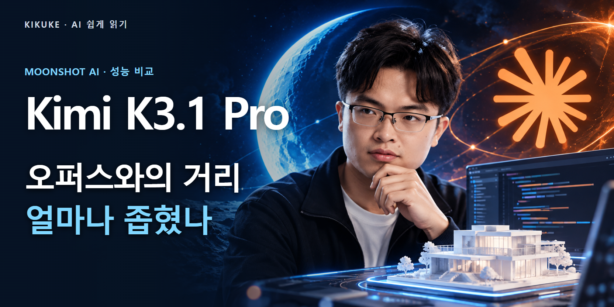
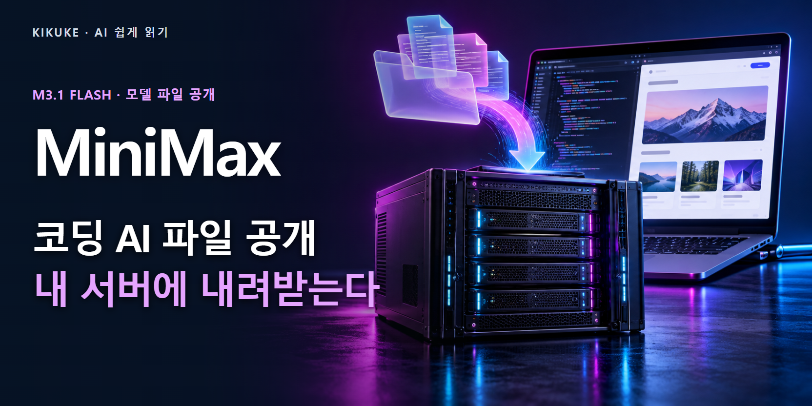
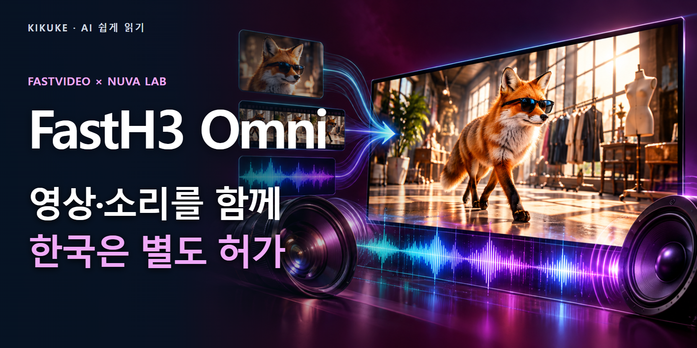

Kimi K3.1 Pro, 오퍼스와 3점 차…코딩·3D 실력과 실제 비용을 따져봤다
독립 평가 55점으로 상위권에 진입한 Kimi K3.1 Pro. 회사 시험과 AA 점수, 해외 리뷰 두 편, API 비용을 나눠 비교하고 지금 쓸 수 있는 기능과 11월 4일까지 예정된 가중치 공개를 정리했다.
2026.10.24 · AI 뉴스
코딩·음성·영상 AI의 새 기능과 공개 파일, 보안·개인정보·금융의 이용 조건을 살펴봅니다.

독립 평가 55점으로 상위권에 진입한 Kimi K3.1 Pro. 회사 시험과 AA 점수, 해외 리뷰 두 편, API 비용을 나눠 비교하고 지금 쓸 수 있는 기능과 11월 4일까지 예정된 가중치 공개를 정리했다.
Ming-3.0 TTS의 코드·모델 파일이 공개됐다. 한국어 지원 범위, 두 모델의 실제 한국어 시험 결과, 감정 제어와의 구분, MIT 조건과 장비를 짚는다.

Hy-Nomas는 다음 영상 구간을 만들 때 새 문장과 카메라 이동을 반영한다. 실제 모델 파일, RTX 4090 실행 조건과 공개된 평가 자료의 범위를 살펴본다.

MiniMax M3.1 Flash가 서비스 제공에 이어 실제 모델 파일을 공개했다. 100만 토큰 입력, 코딩 시험, API 가격과 직접 운영의 장비·상업 이용 조건을 나눠 설명한다.
앤트로픽이 Pro·Max·Team의 새 작업을 자동 모드로 시작하도록 확대한다. 사람 대신 무엇을 검사하는지, 기존 코딩 시험의 89% 차단율이 어디까지 유효한지 살폈다.
구글은 10월 16일 개인정보처리방침에 선택적 연결의 예외를 추가했다. 검색에 연결한 자료가 어떻게 광고와 AI 개선에 쓰이는지, 한국 지원 범위와 설정의 차이를 정리했다.
9월 20일 연구 AI의 제한된 인터넷 접근 뒤, 오픈AI가 10월 1일 훈련을 재개하기까지 강화한 격리·감시·중단 장치를 10월 23일 보고서로 설명했다.

FastVideo와 Nuva Lab이 FastH3 Omni 파일·학습 코드를 공개했다. 참고 자료를 함께 쓰는 기능, GB200 8개 속도 시험과 한국이 제외된 공개 라이선스를 짚는다.
고객이 비밀번호를 건넨 AI라도 은행이 허용한 접속은 아닐 수 있다. 미국 은행들의 차단 보도와 공식 발언, 11월 시행 예정 약관을 통해 정보 조회와 돈을 움직이는 권한의 차이를 살펴본다.
Getty의 1년 주가 하락률을 기간별로 확인하고, 사진 사용권·작가 보상·부채·Stability AI 소송·경쟁사의 AI 전략을 나눠 살펴봤다.